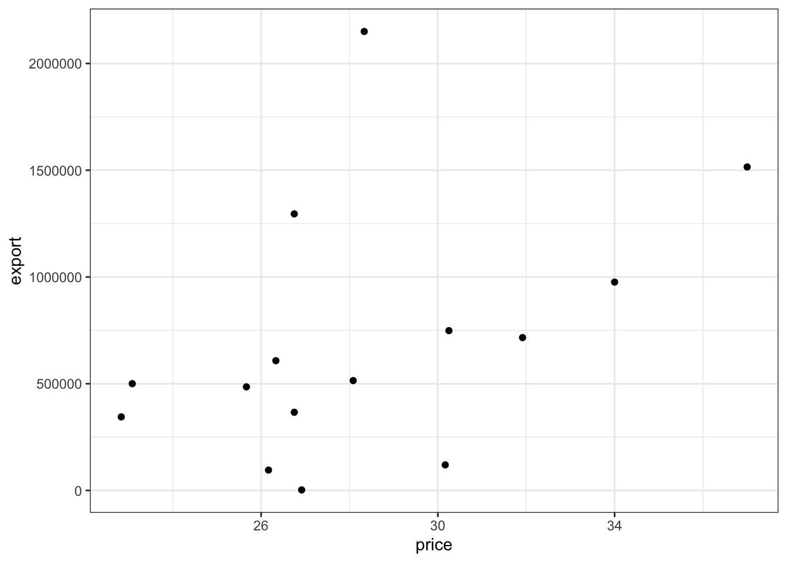
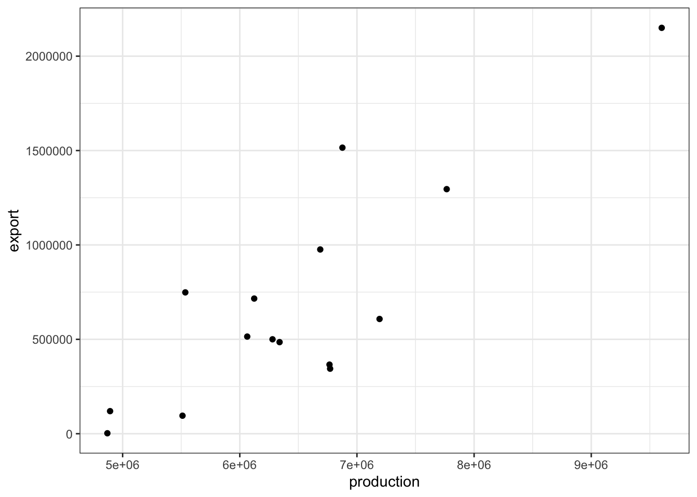
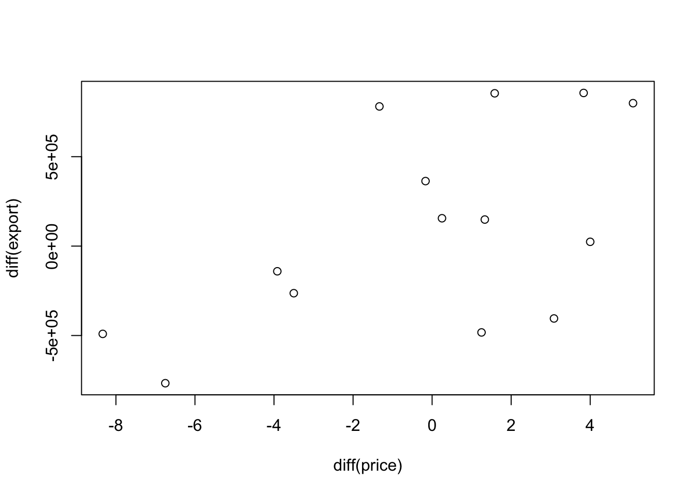
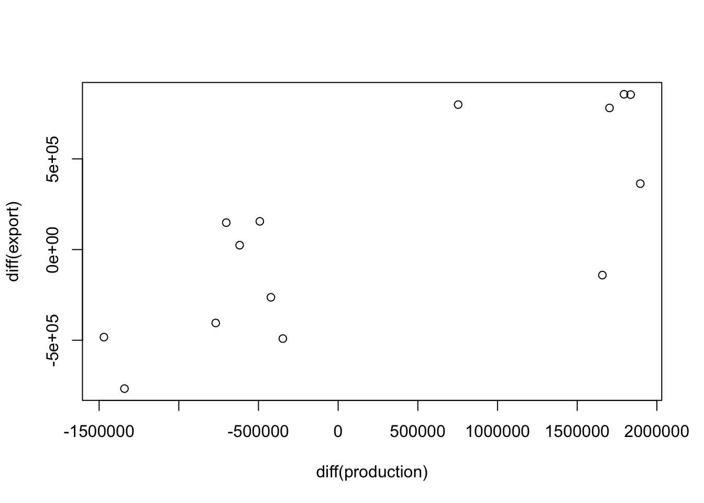
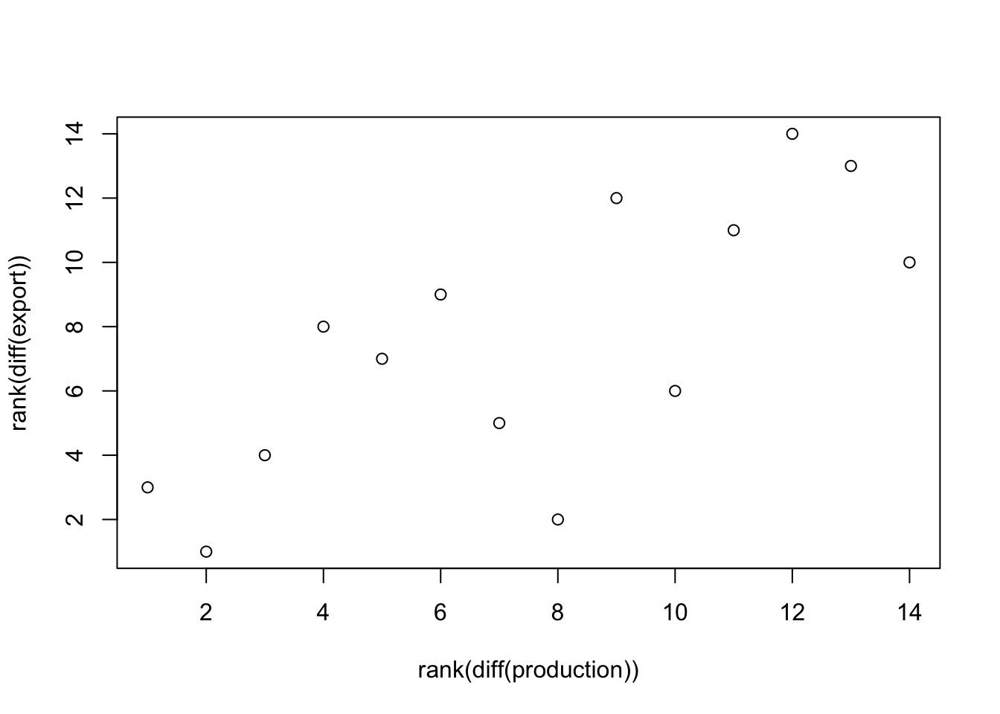
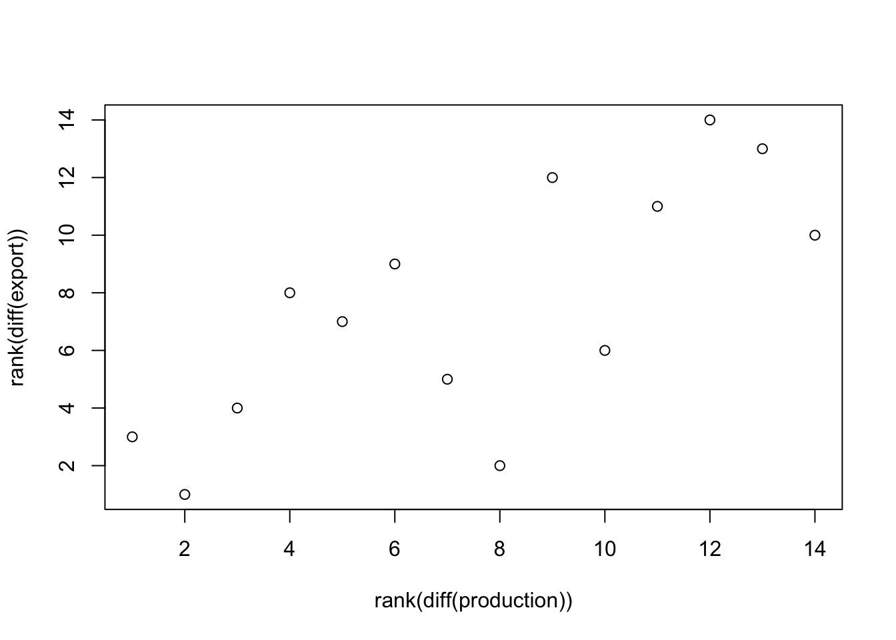
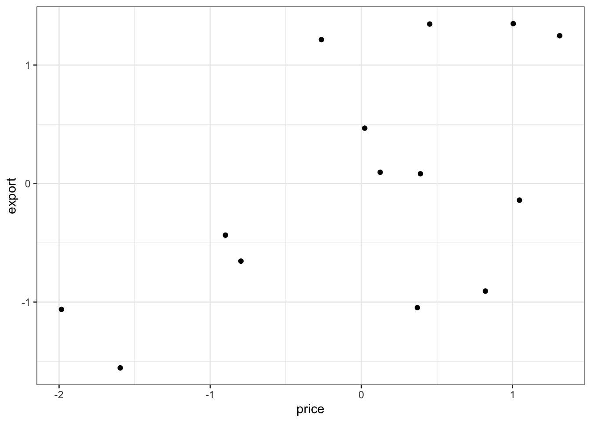
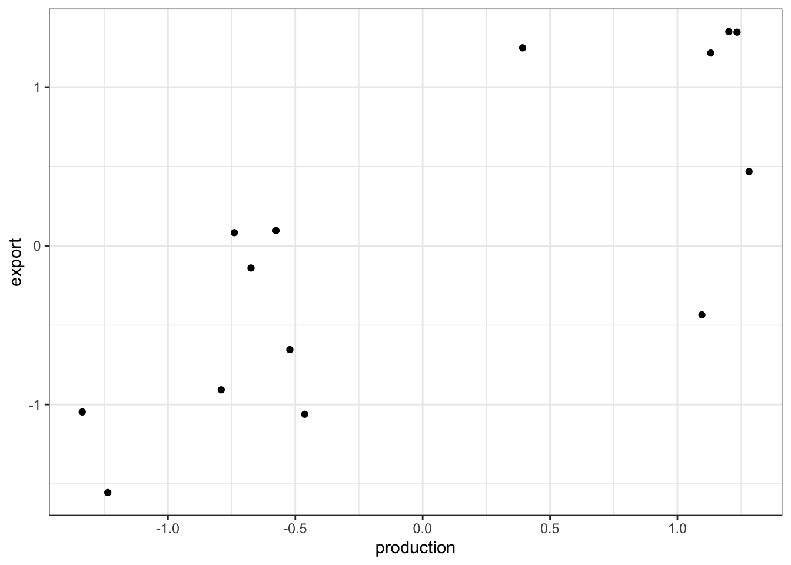
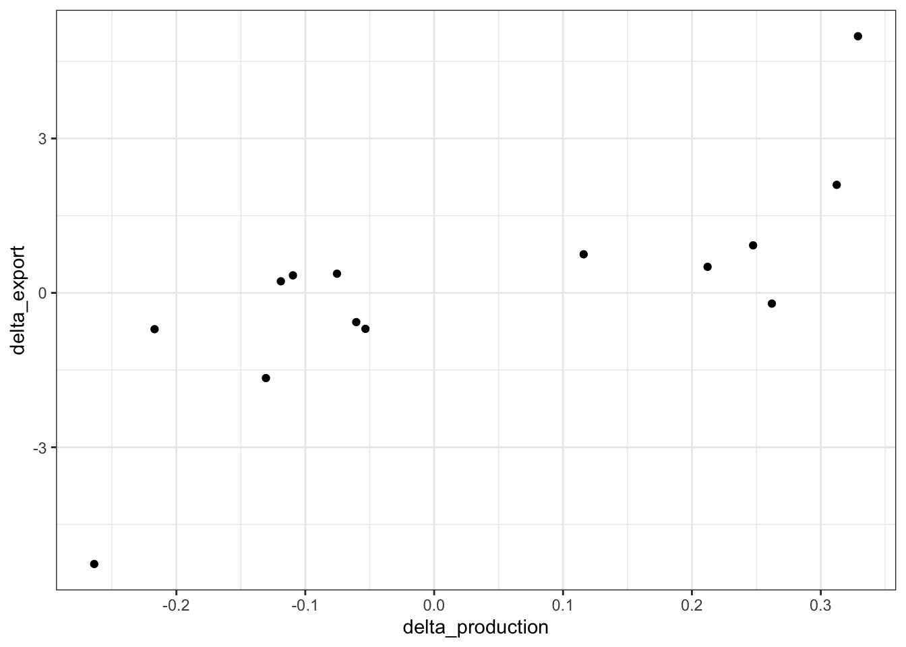
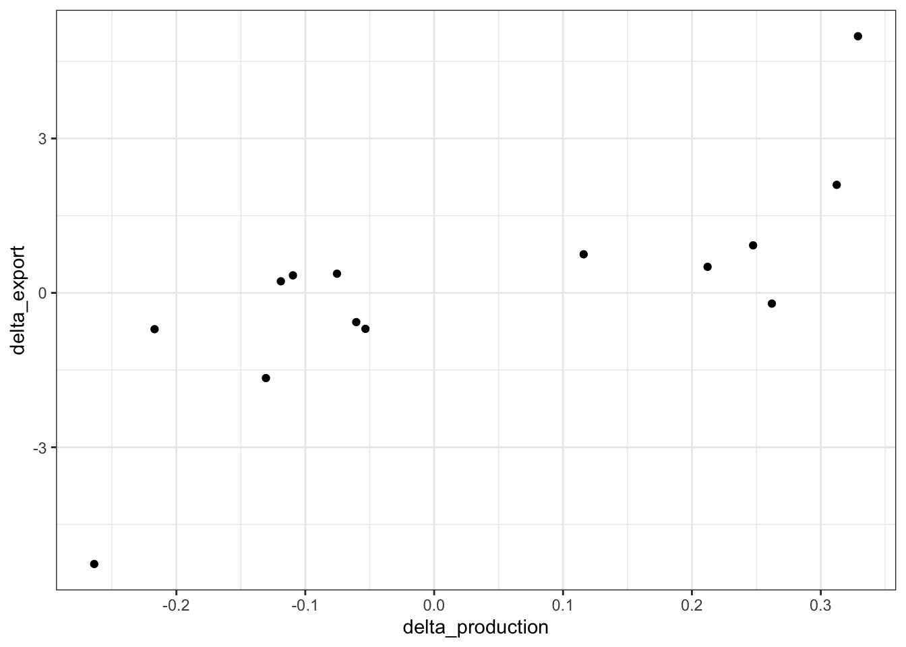

Chapter 13 Outside of the normal
About ranks, transformations, …
Hooker and Yule paper, 1906
## [1] 0.4264428## [1] 0.8429314## [1] 0.5326186## [1] 0.6714286## [1] 0.5811188## [1] 0.7782709
##
## Call:
## lm(formula = diff(export) ~ diff(production) + diff(price), data = Wheat_export)
##
## Residuals:
## Min 1Q Median 3Q Max
## -438894 -139590 39148 188279 303853
##
## Coefficients:
## Estimate Std. Error t value Pr(>|t|)
## (Intercept) 4.301e+04 7.106e+04 0.605 0.557241
## diff(production) 3.051e-01 5.672e-02 5.379 0.000224 ***
## diff(price) 6.404e+04 1.792e+04 3.574 0.004362 **
## ---
## Signif. codes: 0 '***' 0.001 '**' 0.01 '*' 0.05 '.' 0.1 ' ' 1
##
## Residual standard error: 259500 on 11 degrees of freedom
## Multiple R-squared: 0.8176, Adjusted R-squared: 0.7844
## F-statistic: 24.65 on 2 and 11 DF, p-value: 8.629e-05 

They computed indices, which seem to be the standardized annual differences.

##
## Call:
## lm(formula = export ~ price + production, data = Indices)
##
## Residuals:
## Min 1Q Median 3Q Max
## -0.78544 -0.24981 0.07006 0.33694 0.54378
##
## Coefficients:
## Estimate Std. Error t value Pr(>|t|)
## (Intercept) 2.083e-17 1.241e-01 0.000 1.000000
## price 4.665e-01 1.305e-01 3.574 0.004362 **
## production 7.021e-01 1.305e-01 5.379 0.000224 ***
## ---
## Signif. codes: 0 '***' 0.001 '**' 0.01 '*' 0.05 '.' 0.1 ' ' 1
##
## Residual standard error: 0.4643 on 11 degrees of freedom
## Multiple R-squared: 0.8176, Adjusted R-squared: 0.7844
## F-statistic: 24.65 on 2 and 11 DF, p-value: 8.629e-05What if we do it with log proportional change …
## [1] 0.09435189## [1] 0.740655 

##
## Call:
## lm(formula = delta_export ~ delta_price + delta_production, data = Deltas)
##
## Residuals:
## Min 1Q Median 3Q Max
## -3.03150 -0.75490 -0.02567 1.22324 2.56527
##
## Coefficients:
## Estimate Std. Error t value Pr(>|t|)
## (Intercept) -0.1720 0.4365 -0.394 0.70114
## delta_price 0.3642 3.2910 0.111 0.91387
## delta_production 7.8920 2.1741 3.630 0.00396 **
## ---
## Signif. codes: 0 '***' 0.001 '**' 0.01 '*' 0.05 '.' 0.1 ' ' 1
##
## Residual standard error: 1.607 on 11 degrees of freedom
## Multiple R-squared: 0.5491, Adjusted R-squared: 0.4671
## F-statistic: 6.697 on 2 and 11 DF, p-value: 0.01252